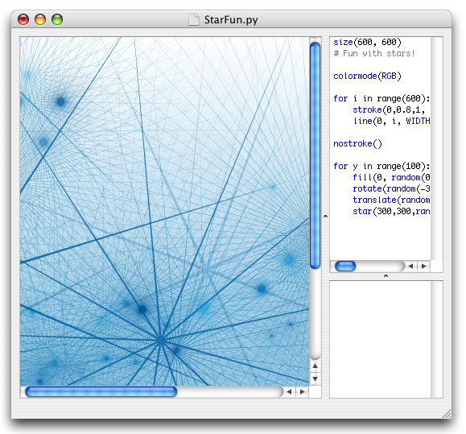
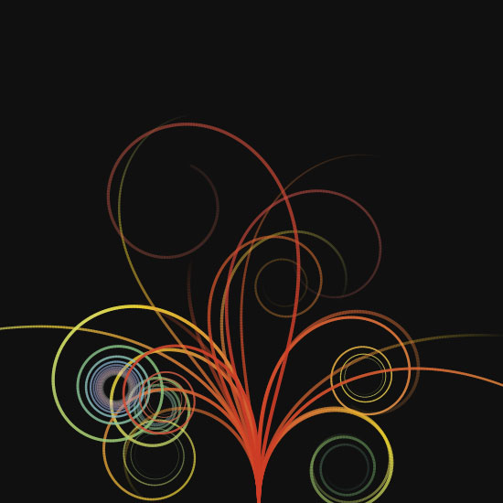

NodeBox
Let’s all agree to be proponents of NodeBox. Here, I’ll start. I call this Star Crash Get Out of The Way, Deirdre.
# Setup the field
size(500, 700)
green = color(0.9, 0.9, 0.6)
black = color(0, 0, 0)
fill(green)
rect(0, 0, 500, 700)
# Stars big and arrows not as big
for i in range(0, 40):
skew(random(4.0, 20.0), random(4.0, 20.0))
fill(black)
star(random(500), random(700), random(5, 100))
fill(green)
arrow(random(500), random(700), random(1, 100))
Like LOGO, it’s purely artware. But rather than just shapes, you get Bezier curves and typography. The gallery is full of gorgeous stuff, many come with source code.
NodeBox is for Mac platforms and scripts are written in Python.
I see alot of strengths in NodeBox: it has a very complete manual (and the manual isn’t that long,) lines and shapes are beautifully antialiased, gradients are smooth. A good name, a great icon. These are important things! It’s so rare to find lovely programming tools.
You basically have a very simple window with boxes for editing, running and debugging scripts. I’m curious why they didn’t label the different areas or add some toolbar buttons to switch between them. I think this would go a long way with the newbs!

Lots of math in NodeBox. Mostly simple math: plus, times, minus. But some geometry. A good way to learn geometry.
One thing about NodeBox that helps soften the math pains, though: you’re mostly going to be throwing numbers and shapes together to see what kinds of patterns you can come up with. So, if you’re going to start off, just plug random numbers in! Or start with the code in the sample and flip the numbers up one at a time and watch things change.
The tutorial is very good, with lots of pictures, but feels too long. The page on variables could be cut in a quarter. And if they could work out an interactive tutorial (in that third debugging window perhaps,) well, that would really make NodeBox a great starter program for young kids.

Now begin the comments …
Nathan Weizenbaum
No Linux? Too bad.
It would be really cool if we could do something like this for Ruby and HacketyHack. I wonder if it would be possible to do something with rcairo. I think it’s bundled with the XUL stuff, too, so if we can figure out how to link it it shouldn’t add much weight to the H-ety H distribution.
lemon
I love my NodeBox!
This one time, I drew a truck and animated it falling off a cliff. It was like using the old Amiga program DELUXE PAINT, except I was doing everything with code!
When someone decided to pay me money for making rising bubbles in flash, I got so frustrated because it wasn’t immediately obvious how to do it with code. I wanted to hack like this: drawMeACirclePlease(x,y,magic), but nooo it wanted me to find the math on the internets. I like geometry and maths but I don’t see why it wouldn’t let me draw a circle like my NodeBox lets me :(!
Eventually I just had to do everything with the GUI and it was really 500 times harder than it should be.
Hackety is clearly the place to be I already love it to bits and I hope I’m welcome! Hello!
why
Nathan Weizenbaum: I would be okay using DirectX and OpenGL directly. The graphics library doesn’t need to be that heavy really. Maybe Flash (through Gnash.)
lemon: I never had an Amiga. You are so incredibly lucky. I really wanted both an Apple IIgs and an Amiga. So, then. What’s a good Amiga model?
Nathan
The thing about using DirectX and OpenGL is that we’d have to write two sets of code for everything. Also, it seems that there are no pre-existing Ruby bindings for DirectX, and using the Windows API is a big headache.
Peter
Just go with OpenGL. It’s a lot more easy to code with anyway. :)
eli
Although I have no mac, and NodeBox looks light-years ahead, it still reminds me of Context Free.
stungeye
A similar multi-platform tool: Processing.org
Beautiful things can be made: Magnetic Sphere
Scripts, however, are written in Java.
Similar sketching abilities in HacketyHack would be lovely.
Mr. K
A while ago I wrote a simple JRuby interface for Processsing.
http://www.ifhere.org/Dynamite
JRuby has improved a lot since I wrote this, and it might not even work any more. But Processing and NodeBox are both great platforms.
why
Mr. K: Fantastic! I’m going to give this a try today, I just can’t stop myself.
Mel Gray
One of the guys at my local Ruby meetup has already tackled a Ruby version of something like this. Its called RubyCube and can be found here: http://jrepp.com/rubycube/
Frederik
Hi,
I’m the creator of NodeBox. Glad you like it! (I’m also a big fan of Hackety-Hack, nice to know the feeling’s mutual)
Just wanted to point out that there’s a nice number-slider-gizmo thing in NodeBox. You can “drag” any number in the source code by holding the Command (Apple) key and clicking and dragging the number. This runs the script over and over with the new number. Random values are “locked”, so things don’t jump around. This is nice for trying values out. (You can hold command-shift to increase tenfold, control-command to make small changes)
The documentation for this is a bit hidden, but you can find it at the bottom of the environment page .
Have fun!
why
Oh, hey, that’s fantastic. Just fantastic.
There are actually quite a lot of similarities between HH and NodeBox. I just noticed your Libraries page a few days ago. I’m trying to cover alot of the same stuff: quick little web functions. I love the WordNet Explode script, such a cool mix of things.
Anyway, say Frederik: if you want to write up a truly tricky hack for NodeBox, I’d really like to post a bit more about it.
Zorbid
Although OpenGL is lighter, Fl/Gnash would have the advantage of being web embedable… (or SVG maybe?)
Frederik
Because NodeBox is directly layered on top of the Cocoa framework, we can access all of its functionality, such as the speech recognizer, hardware-accelerated image manipulation using Core Image, etc. That makes for some interesting hacks.
We did a NodeBox workshop in Lahti, Finland recently where we created a sound player, a speech recognizer, and various scripts that use Core Image. Check it out.
Nathan
Alright, so I’ve worked up a little Cairo-based thing. Cairo’s nice because it can render to SVG, which in turn can be displayed in a browser. In fact, for H-ety H, I believe Firefox uses Cairo to render the SVGs, so we could probably tap into that directly.
It’s not really fleshed-out enough to show around yet, but I’ll put it up in a day or two (or maybe this evening) when it is. In the meantime, here’s a little snippet of how I envision it working:
brush.fill = "blue" brush.stroke = "red" brush.opacity = 25 rect :top => 100, :left => 200, :width => 10, :height => 30 shape.do |s| s.point 0, 0 s.point 100, 20 s.point 20, 100 endwhy
Oh, wow! That Lahti 2007 link is hot.
Nathan
I’ve got a working version! Check it out!
Krishna
Nodebox is awesome! Great find.
Comments are closed for this entry.